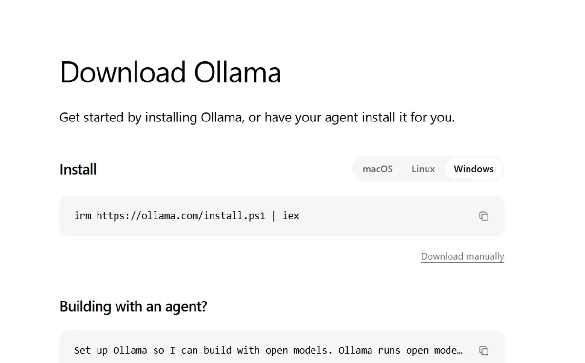

I run AI models on a plain laptop with no graphics card. Setup is one install and two commands.
- Ollama
 Qwen
Qwen Gemma
Gemma
A lot of people believe local AI needs a racing PC with a giant GPU. You can do it on the laptop you already have. This is the exact path I would give a friend.
Why run a model locally
Your data never leaves the machine, it works with no internet, and once it is set up the cost is zero. For notes, drafts, and private documents, that matters a lot.
I keep a local model for meeting notes and draft ideas. Nothing leaves the laptop, it works on a train with no signal, and there is no bill. For private first drafts, local is the better default.
Step 1: install Ollama
Ollama is the easiest way in. On macOS or Linux, it is one command in the terminal. On Windows, you run the installer. That is the whole setup, with no compiling and no fighting with Python environments.

Step 2: pick a small model
Do not start with the biggest model. Start with a small quantized one. "Quantized" just means the model is compressed so it fits in normal memory. A 3 to 4 billion parameter model runs fine on most laptops and still writes decent code and answers questions.
I usually start people on a small Qwen or Gemma 4 build. They do a surprising amount for their size.
Step 3: run it
One command pulls the model, and a second starts a chat in your terminal. Type a question and you get an answer. That is a real LLM running on your own hardware.
Step 4: give it a chat window
The terminal works, but most people want a chat window. Point a lightweight local UI at the model and you get a private ChatGPT that lives on your machine, with no account and no bill.
Make it faster on weak hardware
You have three levers: pick a smaller quantized model, close other apps to free memory, and use a UI that streams tokens so it feels responsive. The first model you try will feel slow. Size down one step and the difference is large.
How far a normal laptop can go
The limits are real. A small model will not beat a frontier API on hard reasoning, and it will stall on very long documents. For daily writing, brainstorming, and coding help, it is more than enough, and it stays private.
I keep a small model running for the 20 little tasks a day. The frontier API handles the few big ones. That split covers almost everything.
Common mistakes
- Starting too big. A 70B model will crawl on a laptop. Start small, see how fast it runs, then size up if you need to.
- Skipping quantization. The compressed version is what decides whether the model is usable or freezes your laptop.
- Expecting too much. A local model is a helpful assistant. Check its answers on anything important.
Try it tonight
Install Ollama and pull one small model. Then ask it to summarize something private that you would never paste into a web chatbot. Watching it answer while your data stays on the laptop is the best reason to set this up.
FAQ
Will it be as good as ChatGPT?
No, on hard reasoning. Yes, for notes, drafts, and daily questions. Know which job you are giving it.
How much memory do I need?
A small quantized model runs in 4 to 8 GB. Check your laptop before sizing up.
If you want the privacy and cost case for going local, read the open vs closed breakdown next.
About the author. Diwakar Ray Yadav writes about AI tools, prompt engineering, and automation from hands-on experiments in Kathmandu. Read more about Diwakar.